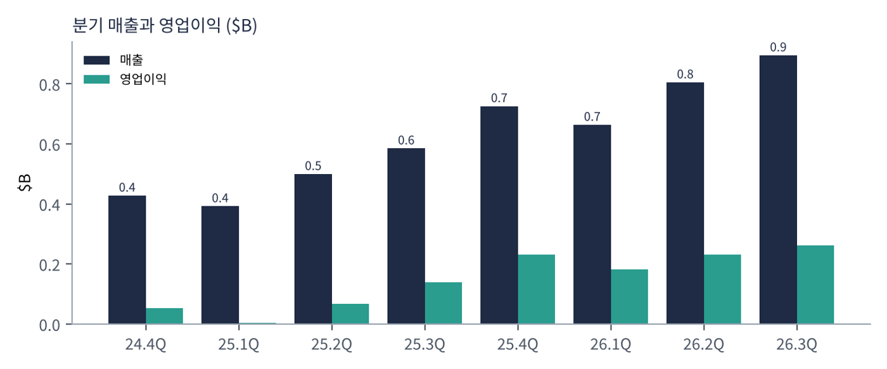
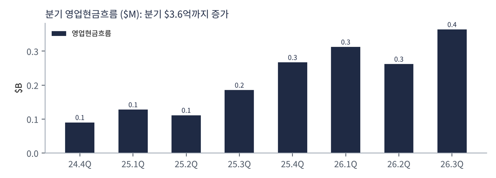
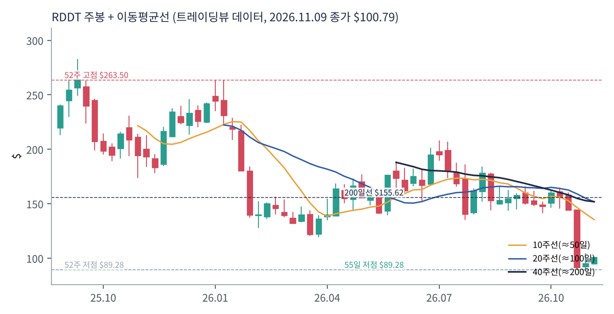
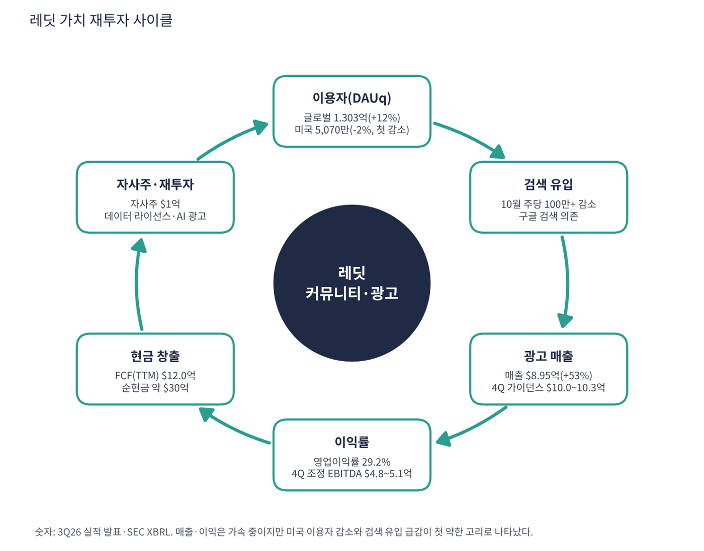

레딧은 관심사별 토론 게시판(서브레딧)이 모인 세계 최대급 커뮤니티 플랫폼이다. 매출 대부분이 광고이고 일부는 AI 회사에 대한 데이터 라이선스다. 구글 검색 결과에 레딧 글이 자주 상단에 올라 신규 이용자가 유입된다. 10월 30일 3분기 실적 발표 후 하루 -29%를 기록했다. 매출은 +53%로 빨랐지만 미국 이용자가 처음 감소했고 검색 유입이 줄었기 때문이다.
| 항목 | 내용 |
|---|---|
| 종목 | Reddit, Inc. (RDDT) · NYSE · 소셜 미디어·광고 · 본사 캘리포니아주 샌프란시스코 |
| 시가총액 | 약 $195억 · TTM PER 20.6배 · P/S 6.2배 · 11/9 종가 $100.79(+6.0%) |
| 최근 분기(2026.3Q) | 매출 $8.95억(+53%), 영업이익 $2.62억(29.2%), 순이익 $2.83억, EPS $1.40, 영업현금 $3.64억 |
| 이용자 | 글로벌 DAUq 1.303억(+12%), 미국 5,070만(-2%, 첫 감소), 해외 +24% |
| 4Q 가이던스 | 매출 $10.0~10.3억(+38~42%), 조정 EBITDA $4.8~5.1억. CEO는 DAUq가 10%대 초반 줄 수 있다고 경고 |
| 다음 실적 | 4Q26 실적: 2027년 2월 예정(확인 필요) |
| 직책 | 인물 | 역할·특징 |
|---|---|---|
| 공동창업자·CEO | 스티브 허프먼 | 레딧 공동창업자. 2015년 복귀 후 광고·데이터 수익화와 2024년 상장을 이끎 |
| CFO | 드루 볼레로 | 광고 매출·EBITDA·자사주 매입 계획을 설명하는 재무 책임자 |
경영 스타일: '이용자를 먼저, 수익화는 그다음'. 광고 단가를 올려 매출을 키우면서도 이용자 확대를 위해 번역·검색 기능에 투자한다. 이번 가이던스에서 DAUq 감소 가능성을 스스로 언급해 시장에 즉시 알린 점은 투명하지만, 그만큼 이용자 흐름이 경영진도 확신하기 어려운 변수라는 뜻이다.
서브레딧에는 질문·답변·후기가 쌓여 있어 검색과 AI 학습 모두에서 가치가 크다. 광고는 관심사 기반으로 판다.
검색·AI 시대에도 사람의 경험이 담긴 콘텐츠로 이용자를 모으고, 광고와 데이터 라이선스로 수익화하는 것이다.
| 분기 | 매출 | 영업이익 | 영업이익률 | 순이익 | 영업현금 | 순이익률 | 특이 사항 |
|---|---|---|---|---|---|---|---|
| 24.4Q | $4.3억 | $0.5억 | 12.4% | $0.7억 | $0.9억 | 16.7% | |
| 25.1Q | $3.9억 | $0.0억 | 1.0% | $0.3억 | $1.3억 | 6.7% | |
| 25.2Q | $5.0억 | $0.7억 | 13.6% | $0.9억 | $1.1억 | 17.9% | |
| 25.3Q | $5.8억 | $1.4억 | 23.7% | $1.6억 | $1.9억 | 27.8% | |
| 25.4Q | $7.3억 | $2.3억 | 31.9% | $2.5억 | $2.7억 | 34.7% | |
| 26.1Q | $6.6억 | $1.8억 | 27.6% | $2.0억 | $3.1억 | 30.8% | |
| 26.2Q | $8.0억 | $2.3억 | 28.8% | $2.5억 | $2.6억 | 31.4% | |
| 26.3Q | $8.9억 | $2.6억 | 29.2% | $2.8억 | $3.6억 | 31.7% | DAUq 1.303억(+12%), 미국 -2%(첫 감소) |


흐름 요약: 매출이 $4.28억에서 $8.95억으로 2.1배, 영업이익이 $0.53억에서 $2.62억으로 5배가 됐다. 영업이익률은 12%(24.4Q)에서 29%(26.3Q)로 올랐다. 영업현금은 분기 $3.6억까지 늘었고 설비투자는 거의 없어 TTM FCF $12.0억(FCF 마진 39%)이다. 지금까지는 사업 지표가 모두 좋은데 미래 지표(이용자·검색 유입)가 꺾였다는 것이 핵심이다. 4Q 가이던스(매출 +38~42%)는 3Q(+53%)보다 낮아 성장 둔화가 시작됐다.
| 수익원 | 내용 | 특징 |
|---|---|---|
| 광고 | 서브레딧·피드·검색 광고. 관심사 기반 타깃팅 | 매출 대부분. 3Q 매출 +53% |
| 데이터 라이선스·기타 | AI 회사에 대한 커뮤니티 데이터 제공 계약 | 비중·계약 기간은 이번 수집에서 확인 못함 |
| 이용자(DAUq) | 26.3Q | 성장 | 의미 |
|---|---|---|---|
| 글로벌 | 1.303억 | +12% | 전체는 증가 |
| 미국 | 5,070만 | -2% | 첫 감소. 광고 단가가 높은 시장이라 중요 |
| 해외 | 약 7,960만 | +24% | 번역 기능 효과. 광고 단가는 낮음 |
광고 매출 증가율이 이용자 증가율(+12%)을 크게 앞서는 것은 이용자당 광고 매출이 빠르게 오르고 있기 때문이다. 이 구조는 가격 인상으로 지탱되며, 이용자가 줄면 한계에 부딪힌다. 광고·데이터 매출의 구체 금액은 이번 수집에서 확인하지 못했다.
레딧이 가려는 곳은 AI 시대에도 사람의 대화가 모이는 인터넷의 핵심 광장이다. 구글·AI 검색이 레딧 글을 인용하고, 레딧은 그 유입을 이용자와 광고로 바꾼다.
| 축 | 내용 |
|---|---|
| 이용자 확대 | 해외 번역·검색 기능으로 해외 DAUq +24% |
| 광고 수익화 | 광고 단가 상승, 광고주 확대 |
| 데이터 라이선스 | AI 학습·검색 인용에 대한 계약 수익 |
| 주주환원 | 자사주 $1억(분기) |

| 이동평균 | 값 | 종가 대비 | 해석 |
|---|---|---|---|
| 5일선 | $97.55 | +3.3% | |
| 20일선 | $129.38 | -22.1% | |
| 50일선 | $143.33 | -29.7% | |
| 100일선 | $157.36 | -35.9% | |
| 200일선 | $155.62 | -35.2% | $155.6, 약 +54% 위 |
11/9 종가 $100.79는 52주 고점 $263.50의 38% 수준, 52주 저점 $89.28 대비 +13%다. 1·3·6·12개월 수익률은 -37%·-35%·-37%·-45%. 연중 고점 $263.5에서 10월 30일 실적 발표 후 하루 -29%로 급락해 52주 저점 부근($89.3)까지 내려왔다가 11/9 하루 +6.0%로 반등했다. 가격은 모든 이동평균선 아래이고 200일선($155.6)과 거리가 크다.
트레이딩뷰 차트에서 사용자가 직접 그린 작도는 포함하지 않았고, 이동평균·돈키언 등 지표는 일봉 데이터로 직접 계산했다.
| 규칙 | 기준 | 현재 값 | 신호 |
|---|---|---|---|
| 장기 추세 필터 | 종가 vs 200일선 | $100.79 < $155.62 | 매도 |
| 중장기 교차 | 50일선 vs 200일선 | $143.33 < $155.62 | 매도 |
| 단기 교차 | 20일선 vs 50일선 | $129.38 < $143.33 | 매도 |
| 돈키언 채널 | 55일 고가 $166.18 / 저가 $89.28 | 중간값 $127.73 아래 | 매도 |
| 1개월 모멘텀 | 21거래일 수익률 | -37.0% (기준 $159.91) | 매도 |
| 3개월 모멘텀 | 63거래일 수익률 | -35.5% (기준 $156.19) | 매도 |
| 6개월 모멘텀 | 126거래일 수익률 | -36.8% (기준 $159.51) | 매도 |
| 12개월 모멘텀 | 252거래일 수익률 | -45.1% (기준 $183.64) | 매도 |
| 종합 (8개 평균) | -1.00 | 강한 매도 |
해석: 점수 -1.00(강한 매도)로 8개 신호가 모두 매도다. 5일 < 20일 < 50일 < 100일 선으로 하락 정렬이 완성된 상태다. 14일 ATR $8.77 (8.7%).
| 가격 | 무엇이 바뀌나 | 의미 |
|---|---|---|
| $155.62 | 200일선 회복 시 장기 신호 매수 전환 | 점수 ±0.25 |
| $127.73 | 돈키언 중간값(55일 고·저점 평균) | 채널 신호 전환선 |
| $129.38 | 20일선 회복 시 단기 흐름 개선 | 단기 추세 신호 |
| $89.28 | 55일 저점 이탈 시 하락 추세 확정 | 손절 판단 기준 |
| 구분 | 가격 | 근거 |
|---|---|---|
| 저항 2 | $129.38 | 20일선 |
| 저항 1 | $127.73 | 돈키언 중간값 |
| 지지 1 | $97.55 | 5일선 |
| 지지 2 | $89.28 | 55일 저점 |
PEG 0.11로 가격은 싸 보이지만 CTA가 완전 매도라 추세 반대(역추세) 매매다. $90~100에서 계획 금액의 25%씩 두 번(총 50%)만 분할 매수하고 5일선 $97.5를 지키며 20일선 $129.4를 넘는 경우에만 추가한다(평균 약 $95, 손절 $86 기준 손익비 1:3.8~1:5.4). 1차 $129.4(20일선), 2차 $143.3(50일선)에서 익절한다. 52주 저점 $89.3 아래 종가 $86 이탈이면 손절한다. 확인 신호는 4Q 가이던스 $10.0~10.3억 달성, 미국 DAUq 감소폭, 검색 유입 회복이다. 가격대는 내 시나리오이며 매매 권유가 아니다.
| 악재 요인 | 내용 | 강도 |
|---|---|---|
| 검색 유입 의존 | 10월 검색 유입이 주당 100만 이상 감소. 구글 알고리즘·AI 검색 변화에 취약 | 높음 |
| 미국 이용자 감소 | 미국 DAUq -2%, CEO가 10%대 초반 감소 경고. 광고 단가가 가장 높은 시장 | 높음 |
| 성장 둔화 | 4Q 매출 가이던스 +38~42%로 3Q(+53%)보다 낮음 | 중간 |
| AI 대체 | AI 챗봇이 레딧 질문·답변을 대신하면 방문이 줄어든다는 우려 | 중간 |
| 경쟁·규제 | 메타·틱톡의 광고 경쟁, 콘텐츠 관리 규제 | 참고 |
| 티커 | 회사 | 시가총액 | PER(TTM) | PEG | P/S | EPS 성장(YoY) |
|---|---|---|---|---|---|---|
| RDDT | 레딧 | $20B | 20.6배 | 0.11 | 6.21배 | +170% |
| META | 메타 | $1,640B | 21.9배 | 0.70 | 6.50배 | +30% |
| GOOGL | 알파벳 | $3,517B | 15.0배 | 0.17 | 7.48배 | +89% |
| PLTR | 팔란티어 | $408B | 118.6배 | 0.48 | 56.64배 | +234% |
| CRM | 세일즈포스 | $177B | 19.6배 | 0.33 | 3.99배 | +59% |
| NOW | 서비스나우 | $107B | 74.0배 | – | 6.89배 | -16% |
EPS 성장률은 트레이딩뷰 TTM 값이다. 핀터레스트·스냅 등 소셜 미디어 직접 경쟁사는 이번 수집에서 데이터를 확보하지 못해 넣지 못했다.
비교 결론: 레딧 PER 20.6배는 메타(21.9)와 비슷하고 알파벳(15.0)보다 높다. PEG 0.11은 이 표에서 가장 낮은 축이다. '매출 +53%·영업이익률 29%인데 PER은 메타 수준'으로 값이 매겨진 종목이지만, 이용자 약화라는 가장 중요한 선행 지표가 꺾였다.
레딧은 현금이 많은 흑자 기업이다. 점검 포인트는 이용자 감소가 광고 매출과 배수에 미치는 영향이다.
| 지표 | 값 | 계산·출처 | 해석 |
|---|---|---|---|
| 영업현금 (26.3Q) | $3.64억 | SEC 분기 | 분기마다 증가 |
| 잉여현금흐름 (TTM) | +$12.0억 | 트레이딩뷰 | FCF 마진 38.8%, 시총의 6.1% |
| 현금 / 총부채 | $30.3억 / $0.3억 | 트레이딩뷰 최근 분기 | 순현금 $30.0억, 시총의 15% |
| P/FCF | 16.3배 | 시총 $195억 ÷ $12.0억 | 소셜 광고 중 낮은 편 |
| 가정 P/S | 주가 | 현재 대비 | 의미 |
|---|---|---|---|
| 8.0배 (회복) | $130 | +29% | DAUq 감소 우려 해소 시 |
| 4.0배 (성장 한 자릿수 우려) | $65 | -36% | 10/30 낙폭과 비슷한 추가 하락 |
| 3.0배 (이용자 급감) | $49 | -52% | 광고 매출 감소 국면 배수 |
가정 P/S와 환산 주가는 내가 둔 시나리오다. TTM 매출 $30.9억, 시총 $195억(P/S 6.2배)을 기준으로 주가를 비례 환산했다.
| 기준 | 매출 | P/S | 비고 |
|---|---|---|---|
| 트레이딩뷰 표시값 | – | 6.2배 | — |
| 최근 4분기(TTM) | $30.9억 | 6.3배 | 시총 $195억 ÷ $30.9억 |
| 4Q 가이던스 연환산 | $40.6억 | 4.8배 | 중간값 $10.15억 × 4 |
| 동종 광고·플랫폼 | – | – | 메타 6.5, 알파벳 7.5, 팔란티어 56.6 (11/9) |
해석: P/S 6.2배는 메타(6.5배)와 비슷해 레딧에 상당한 프리미엄이 붙어 있지는 않다. 매출 성장(+53%)이 메타(+26%)의 2배라는 점을 감안하면 싸지만 이용자 흐름 악화가 할인 요인이다.
| 지표 | 값 | 판정 |
|---|---|---|
| EBITDA (TTM, 트레이딩뷰) | $9.25억 | 흑자 |
| EBITDA 마진 | 30.0% | $9.25억 ÷ $30.9억 |
| TTM 영업이익률 | 29.4% | SEC 합산 $9.08억 ÷ $30.9억 |
| 순현금 | $30.0억 | 순부채/EBITDA 해당 없음 |
| EV/EBITDA | 약 17.8배 | (시총 $195억 - 순현금 $30.0억) ÷ $9.25억 |
| 방식 | PER | EPS 성장률 | PEG | 판정 |
|---|---|---|---|---|
| 트레이딩뷰 (TTM) | 20.6배 | +170% | 0.11 | 적극 매수 |
| 연환산 (3Q EPS $1.40 × 4) | 18.0배 ($100.79 ÷ $5.60) | +40% 가정 | 0.45 | 적극 매수 |
| 보수적 (+25% 가정) | 18.0배 | +25% | 0.72 | 투자 적격 |
| 스트레스 (+10% 가정) | 18.0배 | +10% | 1.80 | 기준 초과 |
판정: PEG 0.11 → '적극 매수' 기준(0.5 이하) 충족. 연환산 성장 40% 가정에서도 0.45로 충족한다. 다만 TTM 성장 +170%는 낮은 기저에서 나온 값이고, 4Q 가이던스(+38~42%)와 DAUq 감소 경고를 고려하면 이익 성장은 크게 둔화된다. 성장률이 10%로 꺾이면 1.80으로 기준을 넘는다. 연환산 성장률 가정은 내 추정이다.

레딧 사이클은 이용자 → 광고 매출 → 이익·현금 → 재투자다. 매출·이익은 강하지만 입구(이용자)가 흔들린다.
| 고리 | 현재 숫자 | 고리 강도 | 약해지는 신호 |
|---|---|---|---|
| ① 이용자(DAUq) | 글로벌 1.303억(+12%), 미국 -2% | 약함 | 미국 DAUq 감소 지속 |
| ② 검색 유입 | 10월 주당 100만+ 감소 | 약함 | 검색 알고리즘 변경 확대 |
| ③ 광고 매출 | 매출 $8.95억(+53%) | 강함 | 4Q 가이던스 +38~42%로 둔화 |
| ④ 이익률 | 영업이익률 29.2% | 강함 | 이용자 하락 시 이익률 후퇴 |
| ⑤ 현금 창출 | FCF(TTM) $12.0억, 순현금 $30.0억 | 강함 | — |
| ⑥ 재투자 | 자사주 $1억, AI·번역·광고 기술 | 보통 | 환원 확대만 하고 이용자 투자 소홀 |
이 사이클의 구조: 사이클의 중간(③④⑤)은 강하지만 입구(①②)가 약해졌다. 앞으로 몇 분기 매출은 이미 확보된 광고 계약으로 유지되겠지만 이용자 감소가 이어지면 ③에 영향을 준다. 약한 고리는 ①과 ②다.